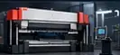
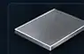
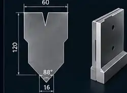
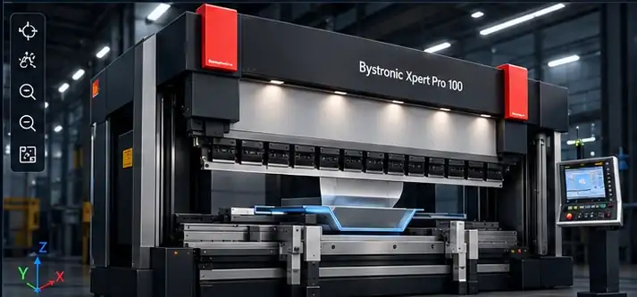
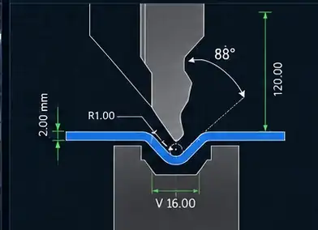
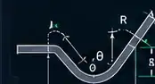

PROYECTO ACTIVO
Soporte motor S235Rev. B · 6 plieguesÚltima edición: Hoy 11:24
INICIALIZANDO MÓDULOS...
Motor de geometría · Bibliotecas · Simulación 3D · IA · Interfaz



Reproducción geométrica del punzón, matriz, chapa y topes · programa activo

Vista de sección y parámetros de plegado

